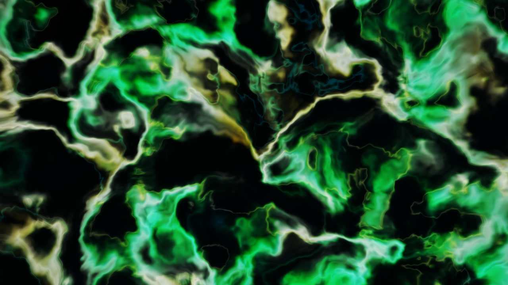

<!doctype html>
<html lang="en">
<meta charset="utf-8">
<meta name="viewport" content="width=device-width,initial-scale=1">
<title>Windows Music Visualizer</title>
<style>
body{margin:0;background:#080808;color:#f5f5f5;font:16px system-ui}figure{max-width:1280px;margin:0 auto}video{display:block;width:100%;aspect-ratio:16/9;object-fit:contain;background:#080808}figcaption{display:flex;align-items:center;justify-content:space-between;gap:16px;padding:16px}h1{font-size:20px;margin:0;letter-spacing:0}button{border:1px solid #666;border-radius:4px;background:#202020;color:white;padding:10px 16px;font:inherit;cursor:pointer}button:focus-visible{outline:3px solid #39d9be} @media(max-width:480px){figcaption{align-items:flex-start}h1{font-size:16px}}
</style>
<figure>
  <video id="showcase" muted loop playsinline preload="none" poster="visualizer-poster.jpg" aria-label="Windows Music Visualizer shuffled demonstration">
    <source src="visualizer-showcase.mp4" type="video/mp4">
    
  </video>
  <figcaption><h1>Windows Music Visualizer</h1><button id="play" type="button" aria-label="Play animation">Play</button></figcaption>
</figure>
<script>
const video=document.getElementById('showcase'),button=document.getElementById('play');
const reduced=matchMedia('(prefers-reduced-motion: reduce)');
function sync(){button.textContent=video.paused?'Play':'Pause';button.setAttribute('aria-label',video.paused?'Play animation':'Pause animation')}
button.addEventListener('click',()=>{if(video.paused)video.play().catch(sync);else video.pause()});
video.addEventListener('play',sync);video.addEventListener('pause',sync);
reduced.addEventListener('change',()=>{if(reduced.matches)video.pause()});
if(!reduced.matches)video.play().catch(sync);
</script>
</html>
